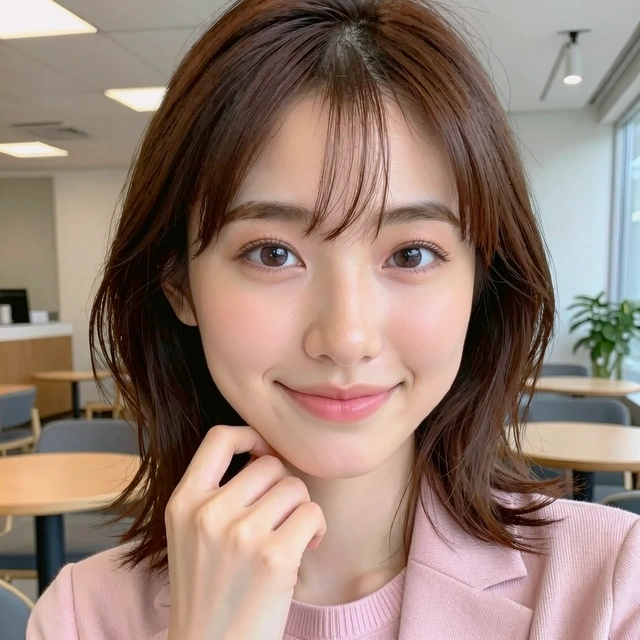

IrisMix 彩妝體驗
選擇模特與妝容，塗選想取用的區域，再調整色調與強度。
我們的目標是讓使用者依照自己的想法，探索不同的彩妝搭配。透過局部選取與圖層混搭，可以組合不同參考圖的眼妝、唇妝與臉部彩繪，調整色調與強度，預覽搭配效果。
如果你對 IrisMix 的技術應用、產品整合或研究合作有興趣，歡迎聯絡我。
- 先選模特，再選日常或藝術彩妝參考圖。
- 在放大的參考圖塗抹選區；也可先選眼妝、唇妝或整體妝容，再用筆刷修整。
- 按「加入圖層」保留選區。在圖層列表選取妝容，可調整色調與強度。
- 使用「復原／重做」比較變化。下載圖片僅包含已加入的圖層，不包含尚未加入的預覽。
1 選擇模特
2 選擇參考妝容
3 在參考圖塗選區域
載入參考圖中…尚未選取
在參考圖上塗抹，藍色區域就是選區；右側會預覽對應效果。
快速選取
4 調整彩妝圖層

示範人像已加入的圖層
只調整彩妝，不改變人像與背景顏色。
彩妝圖層 0
尚未加入妝容。先在左側塗選，或按「整體妝容」，再加入圖層。
圖層調整
載入示範素材中…
示範組合已離線完成 Stage II 渲染；塗選、混搭與圖層調整在瀏覽器進行，不會重新生成。自訂照片的完整瀏覽器推論 →
無法載入體驗素材。
上傳照片前：品質要求與容易失敗的情況
建議使用
- 只有一人、臉部清晰，盡量正面或輕微側臉。
- 眼睛自然睜開、嘴巴輕閉，表情與示範模特接近。
- 光線均勻，沒有美顏、強烈色偏或遮擋。
- JPG、PNG 或 WebP，短邊至少 512 像素，檔案不超過 12 MB。
請避免上傳
- 多人照、嚴重側臉、低頭／仰頭、模糊或臉部太小。
- 閉眼、誇張表情、手或頭髮遮臉、墨鏡與厚重鏡框。
- 過暗、過曝、磨皮、漫畫濾鏡或明顯壓縮失真。
- 要保留原有底妝的人像、透明或接近膚色的細線圖案。
亮片、鏡面唇彩、立體飾品、遮擋、不同眼型與大角度轉頭仍可能失真。自動檢查只能初步篩選，無法保證每張照片的結果。